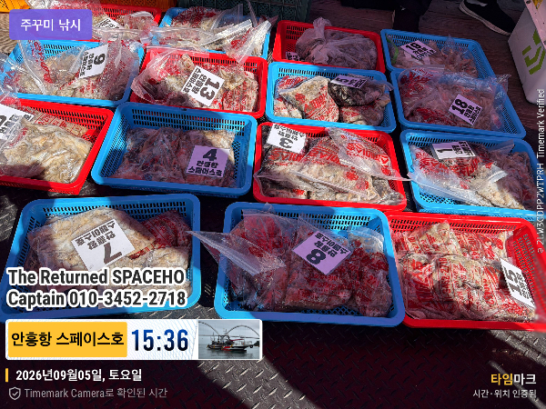

2026-09-06 · 안흥 스페이스호
조황정보 HOME / 조황정보 / 조황상세
스페이스호 9월5일 주꾸미낚시 조황 장원 312수 평균 170수점점 살아납니다*** 안흥 스페이스호 예약 안내 ***예약문의 : 010-3452-2718오시는길 : 충남 태안군 근흥면 안흥1길 32홈페이지 : https://spaceho.sunsang24.com/ 안흥 스페이스호 (서해안/안흥항) 1.7km 주꾸미 2026. 9. 6 | 조회 91 안흥 스페이스호 (서해안/안흥항) 2026. 9. 6 | 조회 91

